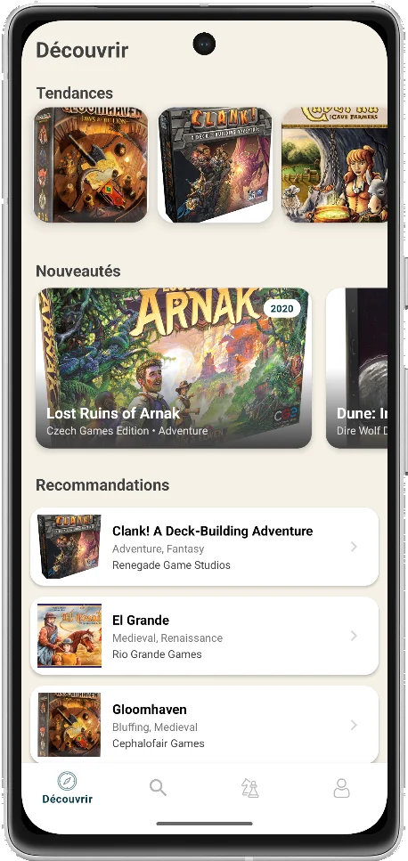
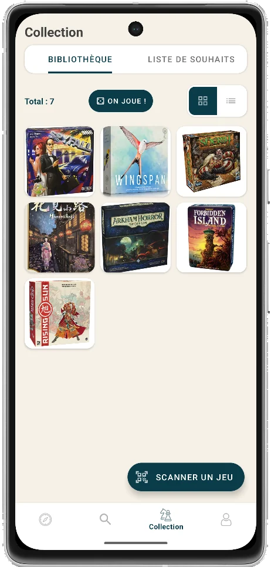
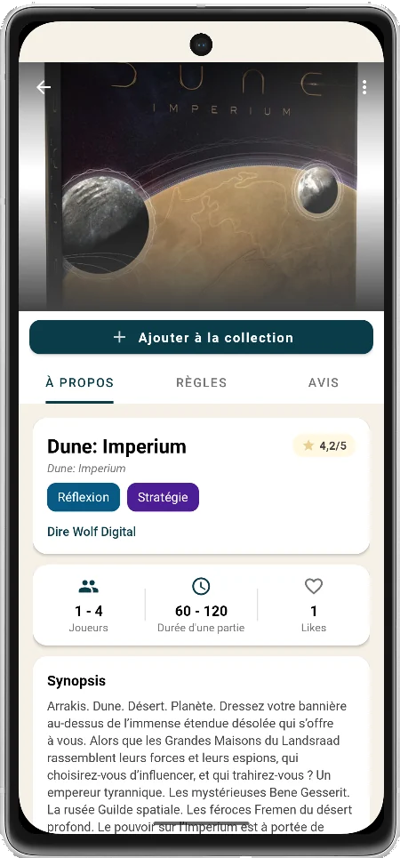
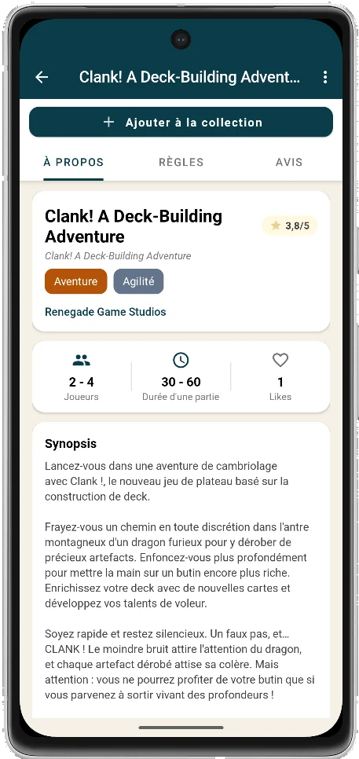

LudoNook
Tous les jeux de société, leurs règles et l'avis des joueurs.
LudoNook est une application mobile qui référence les jeux de société. Chaque jeu a sa fiche : de quoi choisir à quoi jouer, comprendre les règles et lire ce qu'en pensent les autres joueurs.
L'application en images
Parcourez les jeux du moment, composez votre collection et ouvrez la fiche de chaque jeu : description, règles et avis des joueurs.
-

Découvrir : les jeux du moment, les nouveautés et des recommandations. -

Collection : votre bibliothèque et votre liste de souhaits. -

La fiche d'un jeu : note, catégories, nombre de joueurs et durée. -

Synopsis, règles et avis des joueurs : trois onglets par fiche.
Pourquoi LudoNook
- Tout au même endroitDescription, règles et avis sur la même fiche, sans fouiller dix sites.
- Des règles accessiblesLes règles sont résumées pour lancer la partie sans relire toute la notice.
- L'avis des joueursNotes et commentaires pour savoir si un jeu plaira à votre table.
Disponible sur Google Play
Téléchargez LudoNook sur votre téléphone Android.
Supprimer mon compte LudoNook
Vous pouvez supprimer votre compte à tout moment, directement depuis l'application.
Depuis l'application
- Ouvrez LudoNook et connectez-vous.
- Dans l'onglet Profil, rubrique Votre compte, touchez Supprimer le compte.
- Lisez l'avertissement, puis confirmez. Vous devrez saisir votre mot de passe, ou vous reconnecter avec Google.
Ce qui est supprimé
La suppression est définitive. Votre profil, votre collection, votre liste de souhaits, vos amis, vos annonces de prêt et vos demandes de prêt sont perdus et ne peuvent pas être récupérés. Si un prêt est en cours (accepté ou remis), la suppression du compte est refusée tant qu'il n'est pas terminé ou annulé. Vos avis restent visibles sur les fiches des jeux, mais deviennent anonymes.
Ce bouton ouvre LudoNook sur un appareil Android où l'application est installée. Sur un ordinateur, il ne fait rien : suivez les étapes ci-dessus depuis votre téléphone.
Règles de confidentialité de l'application LudoNook
Dernière mise à jour : 12 novembre 2026 (prêt de jeux, section M ; réécriture pour une application mobile).
A. Introduction
- La confidentialité des utilisateurs de l’application LudoNook est très importante à nos yeux, et nous nous engageons à la protéger. Cette politique détaille ce que nous faisons de vos informations personnelles.
- L’application est éditée par VidemTech. Le responsable du traitement des données est VidemTech (contact : contact@videm.tech).
- Ce site web n’utilise pas de cookies et ne mesure pas votre audience.
B. Source
Ce document a été créé grâce à un modèle de SEQ Legal (seqlegal.com)
et a été modifié par VidemTech pour l'application mobile LudoNook
C. Collecte d’informations personnelles
Les types d’informations personnelles suivants peuvent être collectés, stockés et utilisés :
- Les informations de votre compte : votre adresse e-mail et votre mot de passe (géré par Firebase Authentification), ou votre compte Google si vous vous connectez avec Google ;
- Les informations de votre profil : votre nom d’utilisateur, votre avatar et votre biographie ;
- Le contenu que vous créez dans l’application : votre collection de jeux, votre liste de souhaits, vos amis et demandes d’amis, vos notes et avis sur les jeux, vos badges ;
- Si vous utilisez le prêt de jeux entre utilisateurs (facultatif) : vos annonces (jeu proposé, état, description, visibilité, disponibilité), vos demandes d’emprunt (message, lieu de rendez-vous, date de retour proposée, état et dates du prêt) et la zone géographique approximative, d’environ 16 km de large, que vous choisissez ou qui est déduite de la localisation approximative de votre appareil (voir la section M) ;
- La liste des identifiants de vos amis, enregistrée sur votre profil et sur vos annonces réservées à vos amis ;
- Les messages que vous nous envoyez depuis l’application (demandes d’assistance) ;
- Des données techniques et d’utilisation de l’application, collectées par Firebase Analytics (Google) : identifiant d’installation, type d’appareil et version d’Android, écrans consultés et événements d’utilisation. Elles servent à améliorer l’application ;
- Si vous scannez le code-barres d’un jeu, l’image de la caméra est analysée sur votre appareil ; elle n’est ni envoyée ni enregistrée ;
- Si vous utilisez la traduction des descriptions, la traduction est effectuée sur votre appareil (ML Kit).
Avant de nous divulguer des informations personnelles concernant une autre personne, vous devez obtenir le consentement de ladite personne en ce qui concerne la divulgation et le traitement de ces informations personnelles selon les termes de cette politique.
D. Utilisation de vos informations personnelles
Nous utilisons vos informations personnelles pour :
- Faire fonctionner l’application et vous permettre d’utiliser ses services (compte, collection, amis, avis, prêt de jeux) ;
- Personnaliser l’application pour vous ;
- Traiter les demandes et les réclamations que vous nous adressez ;
- Mesurer l’utilisation de l’application et l’améliorer ;
- Maintenir la sécurité de l’application et empêcher la fraude et les abus ;
- Vérifier le respect des conditions d’utilisation de l’application.
Les informations que vous publiez dans l’application (nom d’utilisateur, avatar, avis, annonces) sont visibles des autres utilisateurs selon leur nature, par exemple les annonces réservées à vos amis ne sont visibles que par eux.
Nous ne vendons pas vos informations personnelles et ne les utilisons pas pour de la publicité. Sans votre consentement explicite, nous ne les fournirons pas à des tierces parties pour leur marketing direct.
E. Divulgation de vos informations personnelles
Nous pouvons divulguer vos informations personnelles à nos prestataires techniques dans la mesure où cela est nécessaire au fonctionnement de l’application : Google (Firebase : authentification, base de données, stockage, mesure d’utilisation) et, pour les fonds de carte du prêt de jeux, OpenFreeMap (voir la section M).
Nous pouvons aussi divulguer vos informations personnelles :
- Dans la mesure où nous sommes tenus de le faire par la loi ;
- Dans le cadre de toute procédure judiciaire en cours ou à venir ;
- Pour établir, exercer ou défendre nos droits légaux ;
- À l’acheteur (ou acheteur potentiel) de l’application si nous la vendons.
Sauf disposition contraire de la présente politique, nous ne transmettrons pas vos informations personnelles à des tierces parties.
F. Transferts internationaux de données
- Les données de l’application sont hébergées et traitées par Google (Firebase), notre sous-traitant technique. Google peut les traiter dans l’Union européenne et dans d’autres pays, notamment aux États-Unis. Ces transferts sont encadrés par les garanties prévues par le RGPD (décision d’adéquation ou clauses contractuelles types).
- Nous ne transférons pas vos informations personnelles à d’autres destinataires situés hors de l’espace économique européen, sauf disposition contraire de la présente politique (par exemple OpenFreeMap pour les fonds de carte, section M).
- Les informations personnelles que vous publiez dans l’application (nom d’utilisateur, avis, annonces publiques) sont visibles des autres utilisateurs. Nous ne pouvons pas empêcher l’utilisation, bonne ou mauvaise, de ces informations par des tiers.
G. Conservation de vos informations personnelles
- Les informations personnelles que nous traitons ne sont pas conservées plus longtemps que nécessaire aux fins pour lesquelles elles sont traitées.
- Les données de votre compte, de votre profil et de votre contenu sont conservées tant que votre compte existe ; elles sont supprimées quand vous supprimez votre compte (voir « Supprimer mon compte LudoNook » sur cette page). Vos avis restent alors visibles de manière anonyme.
- Prêt de jeux : vos annonces sont conservées tant que vous ne les supprimez pas et sont supprimées avec votre compte. Les demandes de prêt terminées, refusées ou annulées sont conservées 24 mois, puis supprimées automatiquement ; vos demandes de prêt sont supprimées avec votre compte.
- Nous pouvons conserver certaines informations plus longtemps dans la mesure où nous sommes tenus de le faire par la loi, ou pour établir, exercer ou défendre nos droits légaux.
H. Sécurité de vos informations personnelles
- Nous prenons des précautions techniques et organisationnelles raisonnables pour empêcher la perte, l’abus ou l’altération de vos informations personnelles : les échanges avec nos serveurs sont chiffrés et l’accès aux données est limité par des règles de sécurité.
- Aucune transmission d’informations par internet n’est totalement sûre, et nous ne pouvons pas garantir la sécurité absolue de vos données.
- Vous êtes responsable de la confidentialité du mot de passe de votre compte ; nous ne vous le demanderons jamais.
I. Amendements
Nous pouvons mettre cette politique à jour en publiant une nouvelle version sur cette page, avec la date de dernière mise à jour. Merci de la consulter régulièrement. En cas de changement important, nous vous en informerons dans l’application.
J. Vos droits
Conformément au RGPD, vous disposez des droits suivants sur vos informations personnelles :
- Le droit d’accès : obtenir une copie des informations personnelles que nous détenons sur vous ;
- Le droit de rectification : faire corriger des informations inexactes (la plupart se modifient directement dans l’application) ;
- Le droit à l’effacement : faire supprimer vos informations, notamment en supprimant votre compte depuis l’application (voir « Supprimer mon compte LudoNook » sur cette page) ;
- Le droit à la limitation du traitement, le droit d’opposition et le droit à la portabilité de vos données ;
- Le droit de retirer à tout moment un consentement donné (par exemple la localisation approximative, dans les réglages d’Android).
L’exercice de ces droits est gratuit. Pour les exercer, écrivez-nous à contact@videm.tech ; nous pouvons vous demander un justificatif d’identité uniquement en cas de doute raisonnable sur votre identité. Nous répondons dans un délai d’un mois. Nous pouvons refuser de communiquer des informations dans la mesure permise par la loi.
Vous pouvez aussi introduire une réclamation auprès de la CNIL (cnil.fr).
Vous pouvez nous demander à tout moment de ne pas traiter vos informations personnelles à des fins marketing.
En pratique, vous exprimerez expressément et à l’avance votre accord pour que nous utilisions vos informations personnelles à des fins marketing ou nous vous fournirons une opportunité de refuser l’utilisation de vos informations personnelles à des fins marketing.
K. Services et sites tiers
L’application et ce site contiennent des liens vers des services et sites tiers (par exemple Google Play). Nous n’avons aucun contrôle sur ceux-ci et ne sommes pas responsables de leurs politiques de confidentialité ni de leurs pratiques.
L. Mise à jour des informations
Merci de nous faire savoir si les informations personnelles que nous détenons à votre sujet doivent être corrigées ou mises à jour ; la plupart peuvent l’être directement dans votre profil.
M. Prêt de jeux entre utilisateurs
LudoNook permet de proposer ses jeux en prêt à d’autres utilisateurs et d’en emprunter. Cette fonctionnalité est facultative et réservée aux personnes majeures.
- Les données concernées. Pour une annonce : le jeu proposé, son état, une description libre, sa visibilité (tous les utilisateurs ou seulement vos amis), sa disponibilité et sa zone géographique. Pour une demande d’emprunt : votre message, le lieu de rendez-vous convenu, la date de retour proposée, l’état d’avancement du prêt et ses dates. Votre nom d’utilisateur est affiché sur vos annonces.
- Votre localisation. L’application ne demande que la localisation approximative de votre appareil, uniquement lorsque vous utilisez la recherche de jeux à proximité ou que vous publiez une annonce, et uniquement quand l’application est ouverte (jamais en arrière-plan). Votre position est transformée sur votre appareil en une zone hexagonale d’environ 16 km de large en France. Seule l’identité de cette zone est enregistrée et envoyée à nos serveurs. Votre position précise n’est ni envoyée, ni enregistrée, ni conservée, et aucun historique de vos déplacements n’est gardé. L’application n’affiche pas de distance précise entre vous et un autre utilisateur, seulement une indication de proximité de zone. Vous pouvez refuser la localisation et choisir votre zone manuellement dans une liste de communes. Vous pouvez retirer l’autorisation à tout moment dans les réglages d’Android.
- Qui voit quoi. La zone et le nom d’utilisateur figurant sur une annonce sont visibles par tous les utilisateurs connectés si l’annonce est publique, ou seulement par vos amis si vous l’avez réservée à vos amis. Votre message et le lieu de rendez-vous d’une demande ne sont visibles que par le propriétaire du jeu et l’emprunteur. Pour réserver une annonce à vos amis, l’application enregistre sur votre profil et sur l’annonce la liste des identifiants de vos amis.
- Pourquoi (base légale). La localisation approximative repose sur votre consentement (l’autorisation Android). Les annonces et les demandes sont nécessaires au service de prêt que vous utilisez.
- Durée de conservation. Vos annonces sont conservées tant que vous ne les supprimez pas et sont supprimées avec votre compte. Les demandes de prêt terminées, refusées ou annulées sont conservées 24 mois, puis supprimées ; elles sont aussi supprimées avec votre compte. Un compte ne peut pas être supprimé tant qu’un prêt est en cours.
- Destinataires. Les données sont hébergées par Google Firebase (Firestore), notre sous-traitant technique déjà utilisé par l’application. Quand vous affichez la carte du prêt, les fonds de carte sont fournis par OpenFreeMap, qui voit votre adresse IP et la zone de carte affichée, sans compte ni cookie ; la carte n’affiche jamais votre position. Nous ne vendons pas ces données et ne les utilisons pas pour de la publicité.
- Vos droits. Vous pouvez accéder à vos données, les corriger, les supprimer (supprimer une annonce, ou supprimer votre compte depuis votre profil), retirer votre consentement à la localisation, et introduire une réclamation auprès de la CNIL. Contact : contact@videm.tech.
- Limites à connaître. Même sans position précise, une annonce publique indique à tous une zone d’environ 16 km où se trouve son auteur, associée à son nom d’utilisateur. Si cela ne vous convient pas, réservez l’annonce à vos amis.